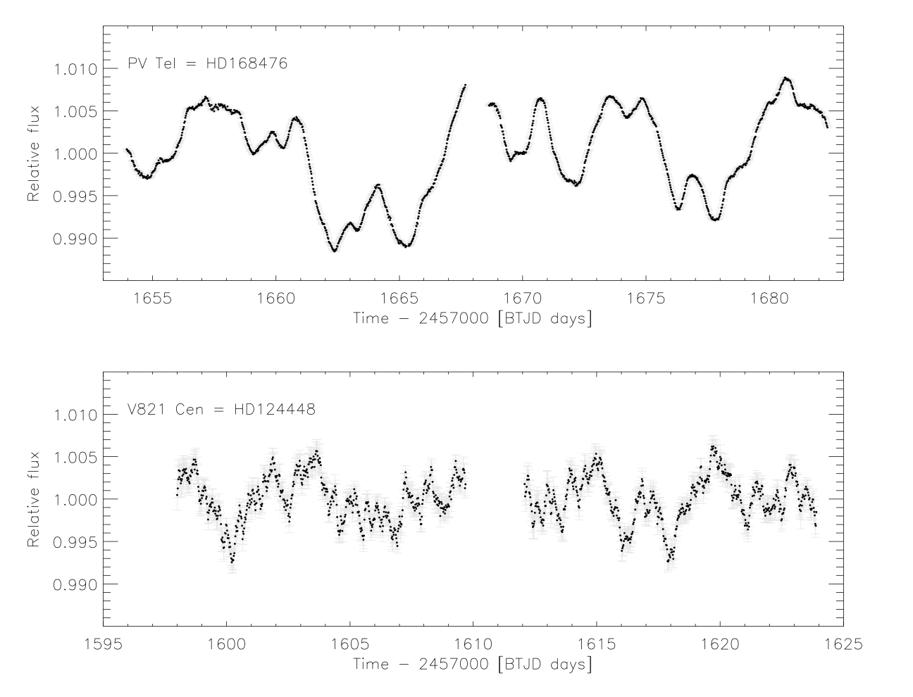

STATUS UPDATE: Cycle 3 selections have now been made!
Hello TESS followers, and welcome to our fifth news bulletin! This week we are happy to announce the selection of our Cycle 3 extended mission targets, and highlight several papers now listed on arXiv.org.
Within Cycle 3 selected programs loosely fell into the following categories:
- Exoplanets: 16
- Stellar astrophysics + asteroseismology: 3
- Extragalactic science: 8
- Binary stars: 16
- Cool star activity: 4
- Solar system science: 2
This week's paper highlights are:
-
A search for young exoplanets in Sectors 1-5 of the TESS Full-Frame-Images (Battley et al., 2020) : This paper aims to study young exoplanets which represent an important aspect of exoplanet research as they allow us to learn about formation and early evolution. Finding a young exoplanet is however difficult because of fast rotation and the activity of their host stars. Many pipelines struggle to deal with the complexities of such systems. The paper presents the LOWESS-based pipeline which is designed to de-trend young stellar light-curves from TESS’s 30min-cadence Full Frame Images (FFIs). The pipeline is applied to sectors 1-5 of the TESS data and although no new candidates are found the authors did recover the signal of the young exoplanet DS Tuc Ab, a number of young eclipsing binaries and a wide array of interesting rotation.
-
TESS photometry of extreme helium stars PV Tel and V821 Cen (Jeffery et al., 2020) : TESS observations of two bright PV Tel variables are presented within this paper. PV Tel variables are EHe stars, known to show variability on timescales of 0.1 - 25 days. PV Tel stars examined in this paper are V821 Cen and PV Tel itself. The variability found in this paper for PV Tel is consistent with previous observations, whereas V821 Cen is observed to vary for the first time. The light-curves for the two objects do not show underlying regularity.
-
The ASAS-SN Catalog of Variable Stars VIII: "Dipper" Stars in the Lupus Star-Forming Region (Bredall et al 2020) : T Tauri-like "dipper" stars are the focus of this paper. These young stellar objects show variations caused by the partial occultation of the star by circumstellar dust. Observations of these objects inform us of the planet-forming zones around the stars. The authors have examined 11 dipper stars in the Lupus star forming region in data from the All-Sky Automated Survey for Supernovae. The objects are characterized in this paper using data from the Las Cumbres Global Observatory Telescope and TESS (+ additional archival data). The authors determine that all stars examined are above or red-ward of the zero-age main sequence and have infrared excesses which suggest the presence of full circumstellar disks.

Fig. 1: Taken from Jeffery et al., (2020): TESS light curves for PV Tel and V821 Cen which have been resampled into 30 min bins.